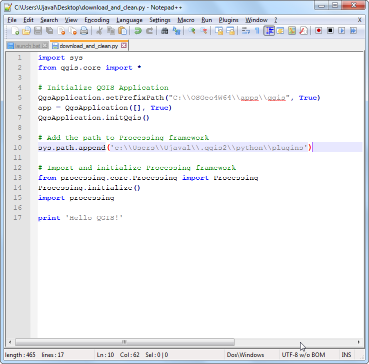
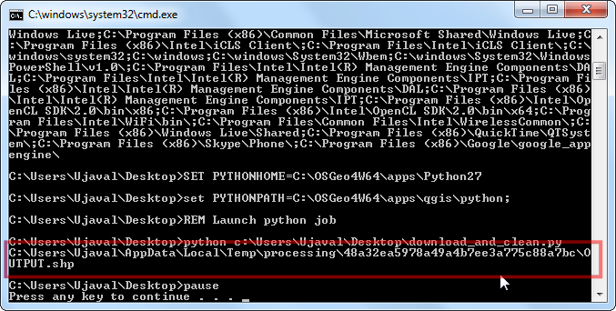

Perustiedot rasterin muotoilusta ja analyysista
[ Download PDF A4 Letter ]
Suuri osa tieteellisista havainnoista ja tutkimuksesta on tuotettu rasteroiduille tietojoukoille. Rasterit ovat pohjimmiltaan pikseleiden muoodostamia hiloja joihin on kiinnitetty määritelty arvo. Tekemällä matemaattisia laskutoimituksia näillä arvoilla voidaan saada aikaan mielenkiintoisia analyyseja. QGIS omaa perustavat mahdollisuudet analysointiin sisään rakennetulla Rasterilaskimella. Tässä oppaassa tutkimme perusteita käyttää Rasterilaskinta ja mahdollisia vaihtoehtoja rastereiden muotoiluun.
Katsaus tehtävään
Käytämme väestömäärän tiheyden rasteroitua dataa etsiäksemme ja visualisoidaksemme maailman alueita jotka ovat nähneet drmaattisia väestömäärän tiheyden muutoksia vuosien 1990 ja 2000 välillä.
Muita taitoja joita tulet oppimaan
Hanki tiedot
Käytämme Gridded Population of the World (GPW) v3 tietojoukkoa jonka on tuottanut Columbia University. Erityisesti tarvitsemme väestötiheyden ruudukkoa koko maailmalle ASCII muotoisena ja vuosille 1990 ja 2000.
Tässä ohhjet kuinka etsiä ja ladata aasiaanliittyvä data.
Siirry Population Density Grid, v3 lataussivulle. Valitse Data Attributes arvoiksi .ascii format, 1° resolution ja 1990 year. Klikkaa Download. Tässä kohtaa voit luoda vapaan tilin ja tehdä sisään kirjoittautumisen, tai voit käyttää Guest Download näppäintä alhaalla välittömään datan lataamiseen. Toista prosessi 2000 year datalle.

Nyt sinulla on 2 zip tiedostoa ladattuna.
For convenience, you can also download a copy of this data by clicking on following links:
gl_gpwv3_pdens_90_ascii_one.zip
gl_gpwv3_pdens_00_ascii_one.zip
Tietojen lähde [GPW3]
Menettely
Käynnistä QGIS ja mene .

Paikallista ladatut zip tiedostot. Pidä Ctrl näppäintä alhaalla ja klikkaa kumpaakin zip tiedostoa valitaksesi ne. Tällä tavalla on mahdollista ladata molemmat tiedostot yhdellä kertaa.

Kumpikin zip tiedosto sisältää 2 ruudukkotiedostoa. a kirjain tiedostonimessä tarkoitta että väestömäärät sopeutettiin YK:n määriin . Käytämme tässä oppaassa sovitettuja ruudukoita. Valitse glds00ag60.asc lisättäväksi tasoksi. Klikkaa

Tasolla ei ole määriteltyä koordinaattijärjestelmää ja siksi ruudukot ovat lat/long muotoisia. Valitse EPSG:4326 koordinaattijärjestelmäksi.

Koska valitsimme molemmat zip tiedostot, tulee sinun käydä sama dialogi uudestaan. Toista prosessi ja valitse glds90ag60.asc ruudukko lisättäväksi tasoksi.

Ja taas, valitse EPSG:4326 koordinaattijärjestelmäksi.

Nyt näet molemmat rasterit ladattuina QGIS:ssä. Rasterit on hahmotettu harmaasävyisiksi, jossa tummemat pikselit merkitsevät alempia arvoja ja vaaleammat pikselit korkeampia arvoja.

Jokaiselle pikselille rasterissa on annettu arvo. Tämä arvo on väestön tiheys asianomaisessa ruudukon elementissä. Klikkaa Tunnista ominaisuudet näppäintä valitaksesi työkalun ja klikkaa minne tahansa rasterilla nähdäksesi pikselin arvon.

Meidän tarvitsee muotoilla tasoa jotta voisimme nähdä paremmin väestötiheyden kuvioinnin. Klikkaa oikealla tason nimeä ja valitse Ominaisuudet.Voit myös tupla-klikata tason nimeä tasojen luettelossa saadaksesi tason ominaisuudet ikkunan näkyville.

Välilehdellä Tyyli, vaihda Hahmotustyyppi arvoksi Yksikaista pseudoväri. Seuraavaksi klikkaa Luokittele kappaleessa Generoi uusi värikartta. Nyt näet 5 uutta väriarvoa. Klikkaa

Takaisin QGIS karttapohjalle, näet heatmap kaltaisen rasterin hahmottamisen. Toista sama prosessi myös toiselle rasterille.

Analyysiimme haluamme löytää alueet joilla on ollut suurin västön muutos vuosien 1990 ja 2000 välillä. Tapa tehdä tämä on löytää erot molempien tasojen jokaisen pikselin arvosta. Valitse .

Rasterin kaistat kappaleessa voit valita tason tupla-klikkaamalla. Kaistat on nimetty rasterin nimellä jota seuraa @ ja kaistan numero. Koska kummassakin rastereistamme on vain yksi kaista, näet vain 1 per rasteri. Rasterilaskin voi suorittaa matemaattisia operaatioita rasterin pisteillä. Tässä tapauksessa haluamme antaa yksinkertaisen kaavan vähentää 1990 väestötiheys vuoden 2000 väestötiheydestä. Anna glds00ag60@1 - glds90ag60@1 kaavaksi. Nimeä tulosrasteri pop_density_change_2000_1990.tif ja merkkaa laatikko Lisää tulos projektiin. vieressä. Klikkaa OK.

Kun työvaihe on valmistunut, näet uuden tason ladatun QGIS:in.

Tämä harmaasävy visualisointi on hyvä, mutta voimme tehdä myös paljon informatiivisemman tulosteen. Klikkaa oikealla pop_density_change_2000_1990 tason nimeä ja valitse Ominaisuudet.

Haluamme muotoilla tason siten että tietyillä pikselien arvot tietyillä rajoilla saavat saman värin. Ennenkuin jatkamme tästä, mene Metadata välilehdelle ja katso rasterin ominaisuuksia. Huomaa tason minimi ja maksimi arvot.

Nyt mene välilehdelle Tyyli. Valitse Yksikaista pseudoväri vihtoehdossa Hahmotustyyppi kappaleessa Kaistan hahmotus. Aseta Värin interpolointi arvoon Erillinen. Klikkaa Lisää arvot käsin näppäintä 4 kertaa luodaksesi 4 yksilöllistä luokkaa. Klikkaa rivin arvoa muokataksesi. Värikartan toimintaperusteena on että kaikki arvot jotka ovat pienempiä kuin annettu arvo saavan rivillä osoitetun värin. Koska minimi arvo rasterissamme on juuri -2000 yläpuolella, valitsemme arvoksi -2000 ensimmäiselle riville. Tämä on No data arvoille. Anna arvot ja nimiöt muille riveille kuten alla kuvassa ja klikkaa

Nyt näet huomattavasti tehokkaamman visualisoinnin jossa voit nähdä alueiden väestötiheyden posittiviset ja negatiiviset muutokset. Klikkaa Lähennä näppäintä ja piirrä suorakulmio Euroopan ympäri tutkiaksesi aluetta tarkemmin.

Valitse Tunnista ominaisuudet työkalu ja klikkaa punaisella ja sinisellä alueella että muotoilu toimii oikein niin kuin on tarkoitettu.

Viekkäämme nyt tämä analyysi askeleen edemmäs ja etsikäämme alueet joissa on ainoastaan negatiivisiä väestotiheyden muutoksia. Avaa valikosta .

Anna lauseke pop_density_change_2000_1990@1 < -10. Tämän lausekkeen tarkoitus on asettaa pikselin arvoksi 1 jossa on lausekkeen kanssa sama ja 0 jos ei. Joten saamme siis rasterin jossa pikselin arvo on 1 jossa negatiivinen muutos ja 0 missä ei. Nimeä tulostaso negative_pop_change_2000_1990 ja merkkaa laatikko Lisää tulos projektiin. Klikkaa OK.

Kun uusi taso on ladattu karttapohjalle, klikkaa oikealla tason nimeä ja valitse Ominaisuudet. Välilehdellä Läpinäkyvyys lisää 0 Uusi ei-tietoa arvo kenttään. Tämä asetus saa pikselit joissa arvo 0 myös läpinäkyviksi. Klikkaa

Nyt näet aalueet joissa negatiivinen väestötiheyden muutos harmaina pikseleinä.